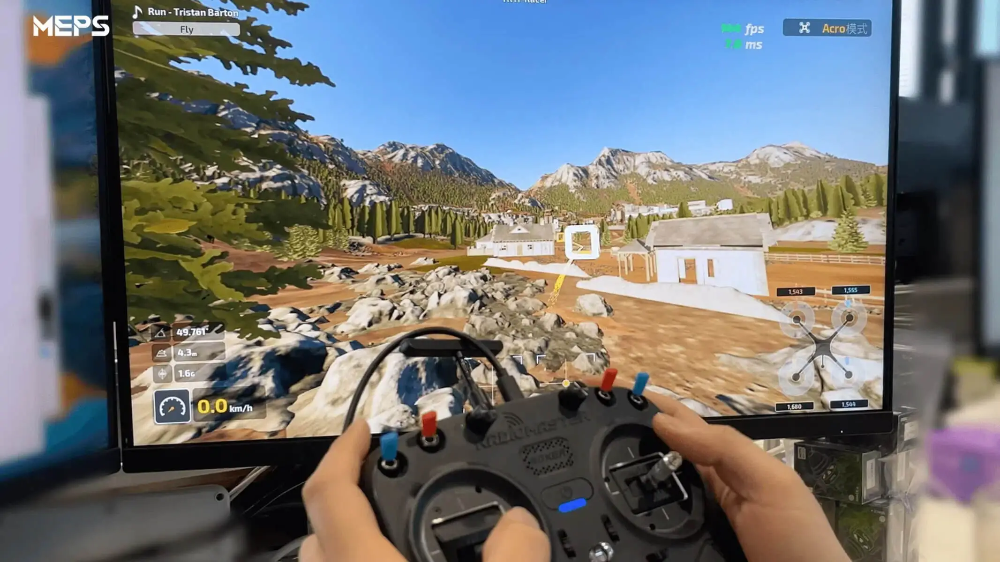
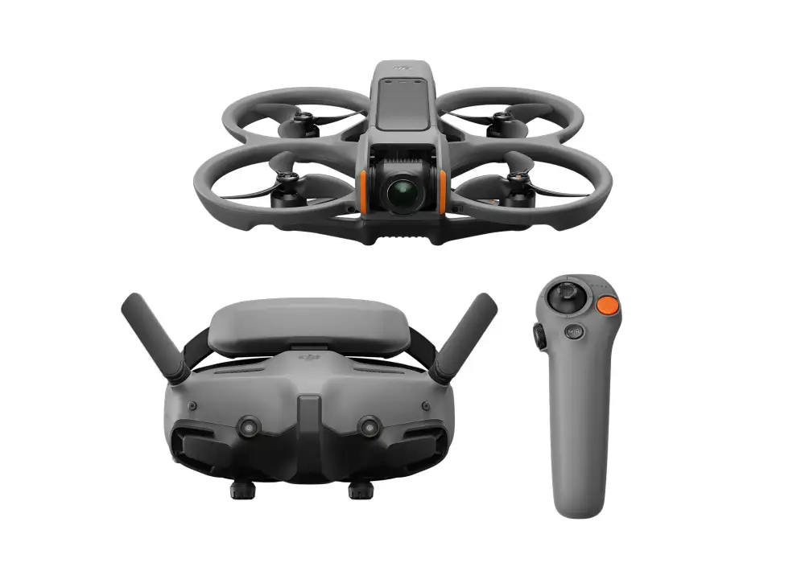

The Pilot's Path
From zero hours to your first custom build. A structured technical roadmap designed for precision, safety, and ultimate flight mastery.
Digital Foundation
Build muscle memory without the crash costs. Start with a radio controller and a professional-grade simulator to master the fundamentals of ACRO flight mode.
- check_circle 20+ Hours ACRO practice
- check_circle Radio Controller Setup
- check_circle Zero-risk Maneuvering


The First Takeoff
Transition to the real world with a Bind-and-Fly (BNF) kit. These pre-tuned drones allow you to focus on your flying skills and safety protocols before diving into complex hardware mechanics.
- check_circle Pre-tuned performance
- check_circle Goggle & Video Link Setup
- check_circle Field Safety Management
Master Engineer
Take full control of your aircraft. Source individual components, master soldering, and learn the intricacies of flight controller firmware to build a machine tailored to your style.
- check_circle Component Selection
- check_circle Soldering & Assembly
- check_circle PID Tuning Mastery

Estimated Time
3-6 months depending on practice frequency and technical aptitude.
Initial Budget
$300 - $500 for a quality radio and simulator setup to start.
Certification
Complete the curriculum to earn your SkyGuide Pilot Endorsement.